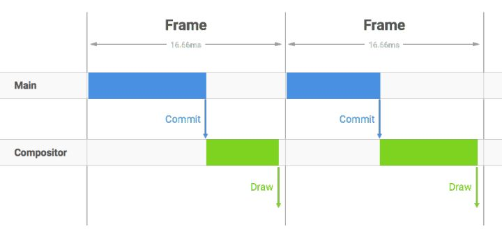
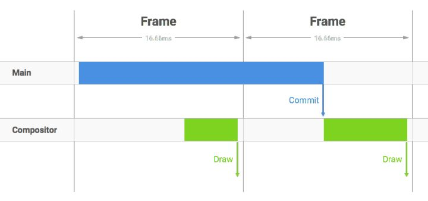
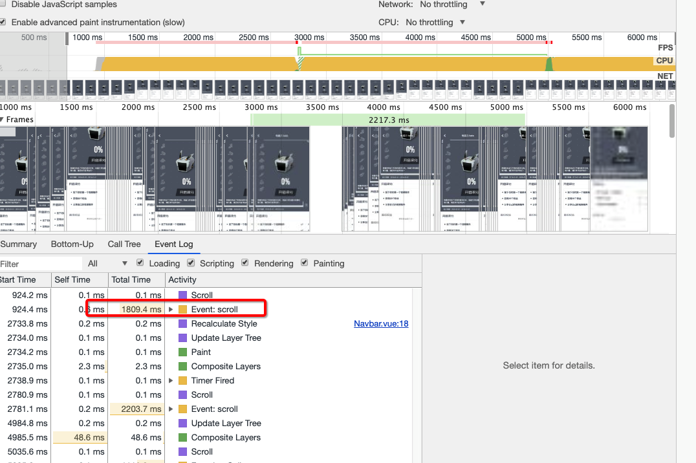

CSS Rule Tree：浏览器将CSS解析成树形的数据结构。
Render Tree：DOM树和CSS规则树合并后生产Render树。
layout：有了Render Tree，浏览器已经能知道网页中有哪些节点、各个节点的CSS定义以及他们的从属关系，从而去计算出每个节点在屏幕中的位置。
painting: 按照算出来的规则，通过显卡，把内容画到屏幕上。

问题：
scroll事件下绑定的对一个dom元素的color修改，会不会影响到浏览器性能，需要做节流吗？
概念：指的是浏览器从js执行到paint的一次绘制过程，帧与帧之间快速地切换，形成动画效果。
目前大多数浏览器屏幕的刷新频率——60次/s，浏览器的渲染更新的页面的标准帧率也为60FPS。
DOM Tree： 浏览器讲HTML解析成树形的数据结构。
CSS Rule Tree：浏览器将CSS解析成树形的数据结构。
Render Tree：DOM树和CSS规则树合并后生产Render树。
layout：有了Render Tree，浏览器已经能知道网页中有哪些节点、各个节点的CSS定义以及他们的从属关系，从而去计算出每个节点在屏幕中的位置。
painting: 按照算出来的规则，通过显卡，把内容画到屏幕上。
浏览器内核拿到响应报文之后，渲染大概分为以下步骤
解析html生产DOM树。
解析CSS规则。
根据DOM Tree和CSS Tree生成Render Tree。
根据Render树进行layout，负责各个元素节点的尺寸、位置计算。
绘制Render树(painting)，绘制页面像素信息。
浏览器会将各层的信息发送给GPU，GPU会将各层合成（composite），显示在屏幕上。
blink和webkit引擎内部都是使用了两个进程来搞定JS执行、页面渲染之类的核心任务。
执行上述渲染步骤
这个线程既负责接收浏览器传来的垂直同步信号(从屏幕顶部到底部的绘制已经完成，指示着前一帧的结束，和新一帧的开始)， 也负责接收传来的用户交互，比如滚动。
Compositor Thread会直接负责处理这些输入，然后转换为对layer的位移和处理，并将新的帧直接commit到GPU Thread，从而直接输出新的页面。
当我们在滚动事件上注册了回调，Compositor Thread便会唤醒Main Thread，让后者去执行JS、完成重绘、重排等过程，产出新的纹理，然后Compositor Thread再进行相关纹理的commit至GPU Thread，完成输出。

在一个标准帧渲染时间16.7ms之内，浏览器需要完成Main线程的操作，并commit给Compositor进程

主线程里操作太多，耗时长，commit的时间被推迟，浏览器来不及将页面draw到屏幕，导致丢帧，直接的影响就是页面卡顿。

一次屏幕刷新的时间间隔16.7ms(1/60)内，就算浏览器渲染了多次页面，屏幕也只刷新一次，这就造成了性能的浪费
function toogleBg() {
let title = document.querySelector('.title')
let scrollTop = Math.abs(M_WRAP.getBoundingClientRect().top)
if(scrollTop < 10) {
title.style.color = 'rgba(225,225,225,0.0' + scrollTop*0.2+')'
} else if(scrollTop > 10 && scrollTop <= 50) {
title.style.color = 'rgba(225,225,225,0.' + scrollTop*0.2+')'
} else {
title.style.color = 'rgba(225,225,225,1')'
}
}
function toogleBg() {
let title = document.querySelector('.title')
title.style.color = '#fff'
for( let m = 0; m< 100; ++m) {
for(let n = 0; n < 100; n++) {
navbar.style.color = '#fff'
}
}

主线程中JS计算时间过长，就会阻塞其他渲染工作，导致丢帧。前面提到每帧的渲染应该在16ms内完成，但在动画过程中，由于已经被占用了不少时间，所以JS代码运行耗时应该控制在3-4毫秒。如果真的有特别耗时且不操作DOM元素的纯计算工作，可以考虑放到Web Workers中执行。
缺点：无法保证callback函数的执行时机，很可能在帧结束的时候执行，从而导致丢帧

每秒60次执行回调——符合屏幕的刷新频率，遇到耗时长的操作，这个数字会降到30来保证稳定的帧数。
把一个耗时长的任务分成很多小片，做异步渲染。